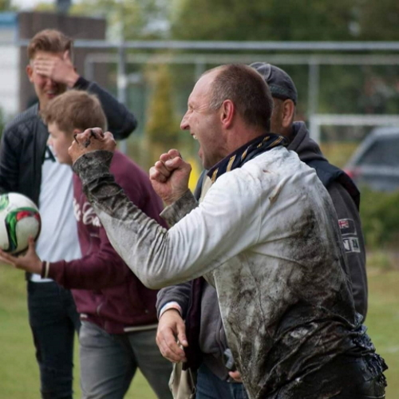

INGEZONDEN STUK VAN KASPER KOSTER
Sir Edwin van der Raad
(geschreven door Kasper Koster)
Op 19 april 2021 overleed Willy van der Kuijlen. Ondanks zijn geringe aantal interlands was hij een zeer bekende naam in het Nederlands voetbal. Door mijn leeftijd kan ook ik mij deze voetballer nog herinneren. Het staat nog steeds op mijn netvlies gebrand, hoe hij de bal uit een vrije trap langs de muur op de goal afvuurde. De keeper ging nog wel gestrekt naar de hoek, maar merkte tot zijn opluchting dat de bal via een reclamebord terug kwam. De keeper pakte de bal nietsvermoedend op om de doeltrap te nemen tot een flink aantal spelers van PSV richting de goal renden om te tonen dat de bal zich niet door het net had laten tegenhouden. Een gat in het net was de stille getuige hiervan. De keeper had het niet eens bewust gedaan. Hij had de bal gewoonweg nooit gezien.
Toen Willy overleed werd hij terecht geëerd door een documentaire op de televisie, maar ook door een minuut stilte bij alle wedstrijden. De topscorer kreeg voortaan de ‘Skiete Willy’ trofee. Willy zou hier ongetwijfeld enorm trots op zijn geweest, maar hij heeft dit helaas niet zelf mee mogen maken. Het is vreemd dat wij onze helden pas echt gaan eren, als zij niet meer onder ons zijn. Wij bewaren vaak onze mooiste woorden tot de tijd, dat zij ze zelf niet meer kunnen horen.
Want hoewel over Johan Cruijff diverse documentaires zijn gemaakt en nog meer boeken zijn verschenen, de Amsterdam Arena mocht zijn naam pas dragen, toen hij niet meer onder ons was. Blijkbaar word je pas echt een legende, als je niet meer onder ons bent.
Zelf heb ik eind vorig jaar geschreven over Kees Kroon en Gert Uiterwijk, waar helaas hetzelfde voor gold. Ook zij konden niet zelf mijn ode aan hen lezen. Het wordt tijd om hier een halt aan toe te roepen. Laten wij eens iemand roemen, die het er ook nog zelf van mag genieten. Laat diegene zich ook bewust zijn, hoe waardevol hij voor ons is.
Edwin van der Raad werd op zijn zesde jaar lid van Vlug en Vaardig. Er wordt wel eens gezegd dat de liefde voor de clubkleuren al in het begin ontstaat, maar gezien de kleuren van ons toenmalige shirt lijkt mij dit hoogst onwaarschijnlijk. Edwin droeg dit oranje/groene shirt tot de A-junioren, toen dit uiteindelijk werd ingeruild voor ons blauwe en wit gestreepte shirt.
Op zijn 17e jaar ging hij deel uitmaken van ons vlaggenschip, waarin hij debuteerde onder Hans Verhoogt, waarin hij nog samenspeelde met veel spelers uit onze glorietijd. Zo was Edwin deel van de zegevierende ploeg in ‘De Meer’, waarin het onaantastbaar geachte Ajax de zege en bijbehorende promotie aan Vlug en Vaardig moest laten.
Helaas zou hij ook twee keer degradatie meemaken, maar tussendoor werd ook nog een kampioenschap aan zijn palmares toegevoegd. Hoewel zijn hart bij Vlug en Vaardig lag waren zijn ambities groter. En dus keek Edwin na de laatste degradatie om zich heen om op hoog niveau te blijven voetballen en na eerder contact met o.a. Xantos en Stormvogels, wat uiteindelijk stuk liep, besloot Edwin zijn geluk bij Amstelveen Heemraad te beproeven, waar hij een succesvolle periode van vijf jaar kende. Op dat moment werd Arnoud Peeters daar hoofdtrainer, die Edwin al kende uit zijn Vlug en Vaardig-periode. Hij maakte hier nieuwe vrienden, waaronder Marcel Bezuijen, die inmiddels al een aantal jaar een graag gezien assistent-trainer bij Vlug en Vaardig is.
Na een periode van vijf jaar keerde Edwin terug op het oude nest bij zijn jeugdliefde Vlug en Vaardig. Hij zou hier in totaal nog zes jaar spelen, waarin vier jaar tevergeefs werd meegestreden voor promotie.
Na een lange spelerscarrière besloot Edwin zijn schoenen spreekwoordelijk aan de wilgen te hangen, die er uiteraard weer uit werden gehaald, als we spelers tekort kwamen.
Maar reeds vanaf zijn twaalfde jaar was het duidelijk dat Edwin bezeten was van het voetbalspelletje en dat een trainersloopbaan wel op zijn pad zou komen. Samen met Piet van Baren trainde en coachte Edwin onze talentvolle jeugd, die hij pas liet gaan, toen zij zelf in onze selectie belandden. Dit deed hij later opnieuw met Rien van Tilburg.
Nadat hij zijn actieve voetbalcarrière had beëindigd ging hij verder met hetgeen hij al zo lang had gedaan. Hij werd coach van ons tweede team, wat hij twee jaar lang deed.
Hierna werd hij door Rob Oosterloo en Arne Peijpers gevraagd om hoofdtrainer te worden, wat hij komend seizoen voor het twaalfde seizoen op rij gaat doen. Edwin is onze eigen Sir Alex Ferguson. Het mag duidelijk zijn dat Edwin deze titel meer zou verdienen dan wie dan ook.
Toen ik hem vroeg naar zijn loopbaan bij onze geliefde club kreeg ik een mail van hem terug, gevuld met namen met wie hij een goede naam had opgebouwd, prettig mee had samengewerkt en wie hij uitermate dankbaar is. Omdat ik vind dat dit stukje puur over Edwin gaat heb ik besloten slechts enkele namen te vermelden zonder de anderen onrecht aan te willen doen. Maar het tekent de persoon in kwestie wel, dat hij de eer graag wil delen met anderen.
Naast zijn werk als hoofdtrainer is Edwin ook nog veel bezig met de zaken rondom Vlug en Vaardig. Zo zit hij als jeugdcoördinator in de jeugdcommissie, waarmee hij al diverse toernooien heeft georganiseerd. Ook zit hij in het hoofdbestuur namens de jeugd. Verder is Edwin te vinden bij bouwkundige projecten of achterstallig onderhoud, maar ook regelt hij samen met Marco de Wilde diverse evenementen, zoals darten en pokeravonden. Dezelfde onvervangbare en onvermoeibare Marco helpt hij mee met het ‘Sixentoernooi’. Daarnaast organiseert hij een voetbalquiz met zoonlief Ryan.
Het mag duidelijk zijn, dat Edwin twee grote liefdes heeft in zijn leven over wie hij zijn aandacht moet verdelen. Naast de liefde voor zijn gezin, bestaande uit Francis, Ryan en Andy, is zijn andere grote liefde natuurlijk Vlug en Vaardig.
Ik heb het initiatief genomen om Edwin hierbij een spreekwoordelijke veer in zijn bevallige achterwerk te steken, omdat hij dit als geen ander verdient en omdat ik vind dat ik hier niet mee moet wachten. Hij hoort er zelf getuige te zijn, dat hij wordt geëerd. Want op ons eigen niveau is Edwin even belangrijk als Rinus Michels, Alex Ferguson, Louis van Gaal of bv Frank Rijkaard. Dus hoort hem dezelfde eer ten deel te vallen.
Edwin: hopelijk kunnen wij nog lang van je genieten bij onze mooie club. Bedankt voor alles wat je voor onze club hebt gedaan en nog steeds betekent.

Foto 1:
Een typerende foto van Edwin, die altijd voorop ging in de strijd: een klassieke aanvoerder

Foto 2:
Na de gewonnen promotiewedstrijd tegen NFC belandt Edwin in de sloot, waarna hij nog steeds fanatiek de overwinning viert met zijn jongens. Zoals we Edwin kennen, gepassioneerd.